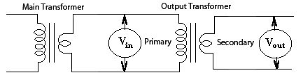

To determine the turns ratio we apply an ac voltage to the primary, and measure the
voltage in the secondary.

- A transformer ( 10 - 15 volts ) is used to apply the ac voltage to the
primary of the Output Transformer (OT)
- An ac voltmeter is connected to the secondary of the OT to measure the
output voltage.
- Now, measure then primary voltage of the OT
For example, if the voltage on the primary measures 13 volts and the
secondary measures 0.52 volts the turns ratio is 25:1
To determine the load resistance for the desired given speaker load, square
the turns ratio you calculated and multiply that number by the desired speaker load
(i.e. 4, 8, 16 ohms).
|